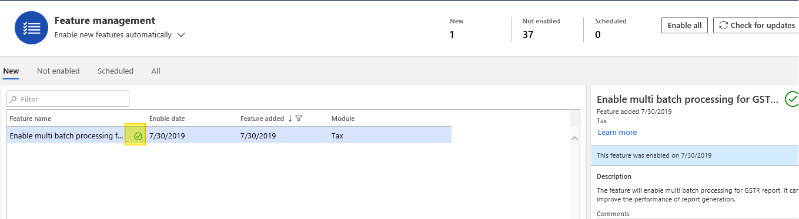
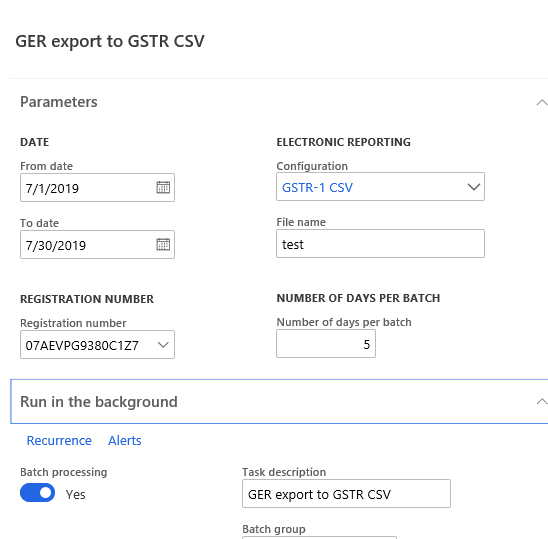
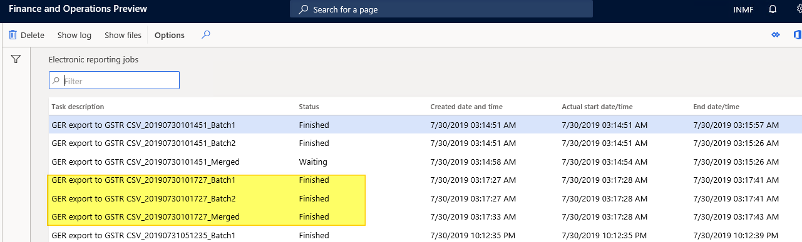

Enable multi-batch processing for GSTR reports
Many tasks in Microsoft Dynamics 365 Finance can be run as part of a batch job. Batch jobs are typically created for tasks such as processing reports, coordinating scheduled maintenance, and creating and sending documents such as invoices. By using batch jobs, you can avoid slowing down your computer or the server during typical working hours. The tasks in a batch job can run either sequentially or at the same time.
In India, every legal entity must file Goods and Services Tax (GST) returns. Typically, the transaction volume is very high, because all details of sales and purchase invoices are reported to the government. Currently, GST return (GSTR) reports can be generated either directly from the report dialog box or by using the batch process. However, report generation can sometimes take quite a while. To make the process more dynamic and efficient, the multi-batch processing feature is provided for GSTR reports. This feature should significantly improve the performance of report generation.
Turn on the multi-batch processing feature
- Go to Workspaces > Feature management, and turn on the Enable multi-batch processing for GSTR reports feature.

Generate a GSTR report
- Go to Tax > Inquiries and reports > Sales tax reports > GER export to GSTR CSV.
- On the Run in the background FastTab, set the Batch processing option to Yes.
- On the Parameters FastTab, in the Number of days per batch field, enter a number that is more than 0 (zero).
- Select OK.

Get CSV files
- Go to Organization administration > Electronic reporting > Electronic reporting jobs.
- Select the comma-separated values (CSV) files that you want. For example, select GER export to GSTR CSV__Merged. This file is generated as a merged file.
